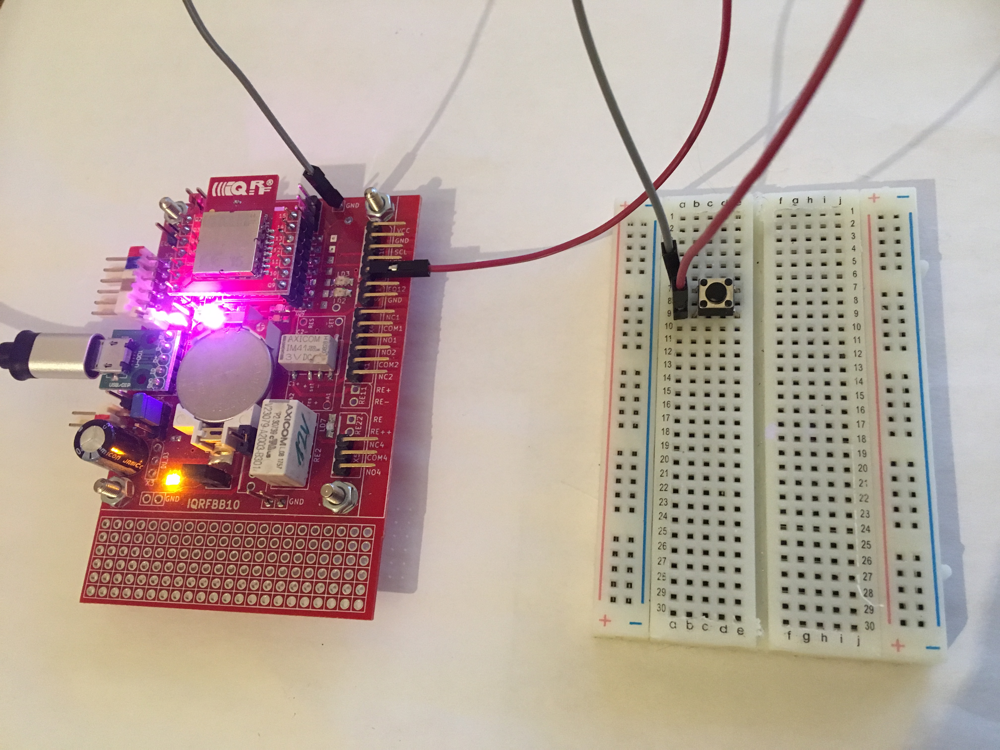
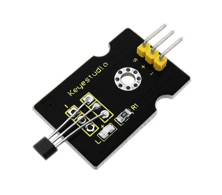
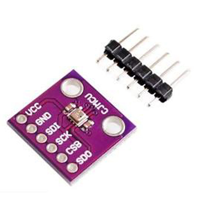
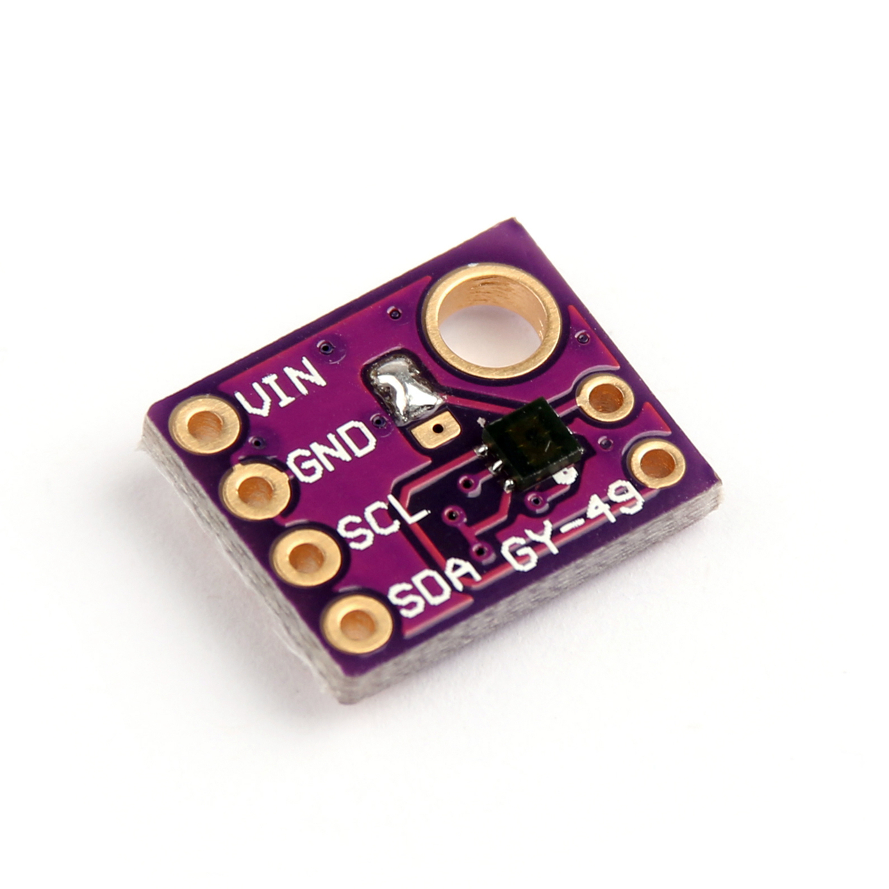

Examples
1. LED2, LED3 on board

/example-led23, this example simple turns on/off RED and GREEN diods on the IQRFBB-10 board. This is first hello world example.
2. Digital Input

/example-di, this example shows how to detect digital input.
3. Digital Output

/example-do, this example shows how to HI/LO digital output. The DO has connected external LED.
4. Hall Magnetic Sensor

/example-hall, this example shows how to connect Hall Magentic Sensor with the board and detect event.
5. Motion detection (ePir)

/example-ePir, this example shows how to connect motion sensor ePir to the board and detect event.
6. Bi-stable relay on board
/example-bistable-relay, this example shows how to switch bi-stable relay on board.
7. Temperature & Barometric Pressure Sensor

Comming soon GY-BME280...
8. Temperature & Humidity Sensor

Comming soon HTU21D...
9. Ambient Light Sensor

Comming soon GY49...